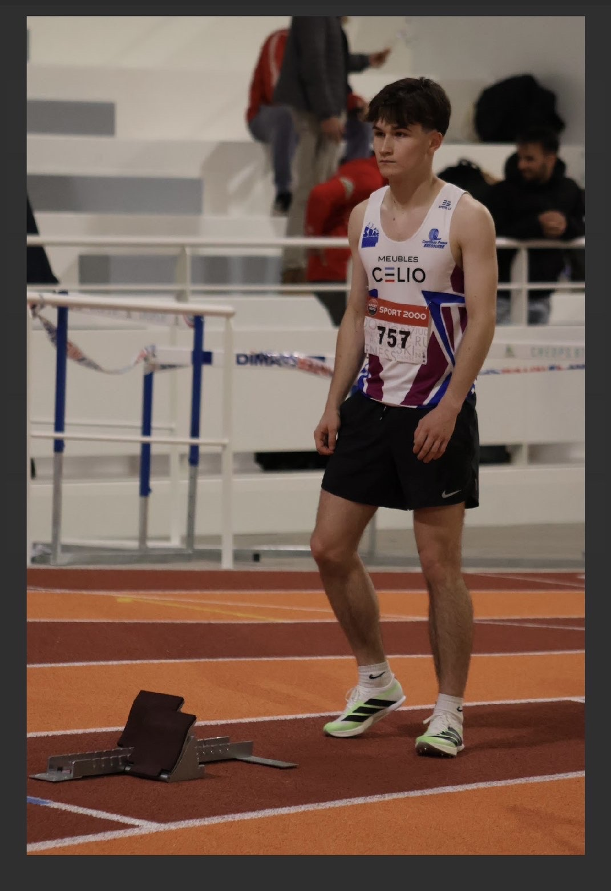

Originaire de Saint-Amand-sur-Sèvre (79700) et née le 23 août 2007, je suis étudiant en BUT Science des Données à l'université de Niort. Curieux et rigoureux, je développe progressivement mes compétences en analyse de données, statistiques et informatique. Découvrez mon parcours, mes valeurs et les ambitions qui me poussent à progresser chaque jour.. Voici mon histoire, mes valeurs et ce qui me motive chaque jour.
Cette première année en BUT Science des Données à Niort a été une étape importante. Elle m'a permis de gagner en autonomie tout en découvrant un domaine qui me plaît réellement. En arrivant à Niort, j'ai dû apprendre à vivre seul en appartement, un changement auquel je me suis rapidement adapté, facilité par de belles rencontres au sein de la promotion.
Durant le premier semestre, tout s'est déroulé dans de bonnes conditions. Grâce à ma spécialité NSI au lycée, j'avais déjà des bases solides en programmation, ce qui m'a permis d'être plus à l'aise dans certaines matières et d'aider mes camarades. J'ai obtenu de bons résultats et je suis resté très impliqué.
Le second semestre a apporté des enseignements plus variés et techniques. J'ai toutefois connu une période de relâchement entre mars et avril, que j'ai su identifier et corriger dès mai. La participation à des projets comme le concours Dataviz a joué un rôle clé dans mon regain de motivation.
Avec le recul, je suis très satisfait de cette année. J'aborde la deuxième année avec confiance, motivation et l'envie de continuer à progresser. Je poursuis également activement mes recherches d'alternance.
Le bilan de 2ème année sera disponible à la fin de l'année universitaire 2025–2026.
Le bilan de 3ème année sera disponible à la fin de l'année universitaire 2026–2027.
Pratique de l'athlétisme en compétition depuis 8 ans au sein du SBAC (Sèvre Bocage Athlétique Club) basé à Bressuire (79300), club de 450 licenciés. Je me spécialise sur les épreuves de demi-fond avec un niveau interrégional.
Performances personnelles

Engagement bénévole actif au sein du club depuis 4 ans. Club de 450 licenciés basé à Bressuire (79300). Participation à l'organisation des manifestations sportives, à la communication du club et à la gestion de la boutique.
Responsable de la mise en avant des produits de la boutique du SBAC : présentation des articles, communication sur les réseaux, contribution à l'image du club auprès des licenciés et du grand public.